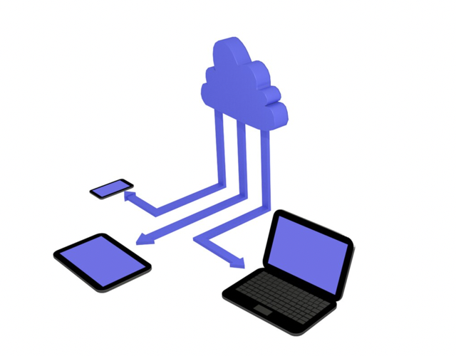
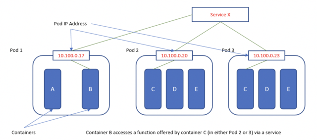
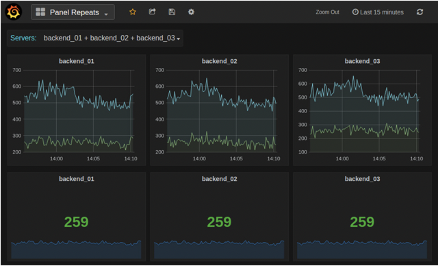
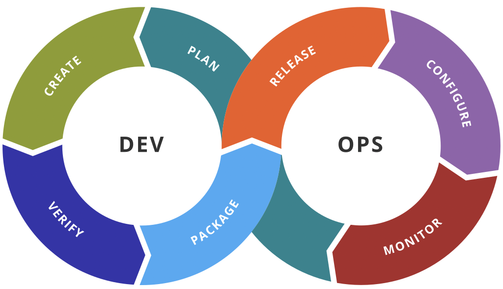

My Fall 2021 Co-op Experience at Tulip.io Inc. - Work Term Report
Written by: Himmat Mahal
During the Fall of 2021, the semester before entering 3rd year of my Computer Science Co-op program in January, I started my second co-op work term. I got a job as a DevOps Engineer Coop at Tulip.io Inc. As part of the Ops/DevOps team, I got to work with a wide range of interesting technology and was exposed to a whole new side of software I had not interacted with much before.

"Cloud Computing" by FutUndBeidl is licensed under CC BY 2.0. To view a copy of this license, visit https://creativecommons.org/licenses/by/2.0/?ref=openverse&atype=rich
About Tulip
Founded in 2013, Tulip is a SaaS company that focuses on building cloud software for the purpose of enhancing retail. Tulip is rapidly growing, and they provide an array of innovative solutions for retailers looking to improve the experience for their customers, which has a massive positive impact on their business.
What I Learned
Going into the job, I developed 4 learning goals to help keep track of my progress throughout the work term. These are goals involving topics I encountered on the job that I found interesting as well as useful, hence I found them worth expanding my skill-set through. I will describe my journey around achieving each goal in depth below.
- My first goal was to learn about Kubernetes and Terraform,
and how both tools can be used for deploying, maintaining, and
scaling applications. I chose this goal because a lot of the work I
did on the job involved these two technologies. As a very short background,
Kubernetes is used for running apps using containers, and it can be used with
cloud providers such as Google Cloud Platform. Terraform is an 'Infrastructure as Code' tool
to help set up the infrastructure needed to run cloud software, such as GCP resources.
This is something we used a lot on the Ops team and it was important to have a good understanding of.
I learned how to use these tools by reading lots of documentation, asking questions to my fellow Ops
team members, going through our onboarding docs on our Confluence pages, and pairing with others
during work. I consider myself successful in these learning goals, since I was able to do a lot of work
involving updating Terraform files and make infrastructure related changes, and gained enough of an
understanding to do some work with Kubernetes. The skills I gained and exposure I got to these
tools will be extremely useful when working with anything cloud software related in the future.
Although in the future, I would still like to learn more about Kubernetes since it
is so interesting and complex.

Marvin The Paranoid, CC BY-SA 4.0 (https://creativecommons.org/licenses/by-sa/4.0), via Wikimedia Commons
- My second goal was to learn about monitoring. In particular, why monitoring is useful for
identifying problems in cloud software and how to use monitoring tools like Prometheus and Grafana.
Some brief info about the two: Prometheus can be used for storing time series data, and Grafana
helps create dashboards and alerts around this data. I made a lot of progress on this by doing plenty
of work using both tools. As I did not have experience with these tools going into the job, I had to
pair with my manager to learn how to work with Grafana dashboards and write PromQL queries. Reading
documentation also helped. I got the hang of this fairly quickly so it became relatively easy for me to
work with. After learning I was able to set up and debug Grafana dashboards, create alerts, add metrics,
and more. I also got an idea of how to read and analyze monitoring dashboards to spot possible issues, by
simply doing my best to follow along during regular meetings in which we looked at our dashboards to ensure
that things were healthy. Therefore, I am very pleased with my progress on this learning goal. Again,
this skill will be useful any time in the future when I may have to work with software that runs on the cloud,
such as future Ops/DevOps roles.

"grafana repeating panels" by xmodulo is licensed under CC BY 2.0. To view a copy of this license, visit https://creativecommons.org/licenses/by/2.0/?ref=openverse&atype=rich
- The third goal I set for myself was to learn how software issues are solved
professionally. I wanted to learn how problems are tracked and solved start-to-finish.
Solving problems is an integral part of the job. I learned that problems are usually
identified using tickets, which contains a lot of information such as general context,
how to reproduce the problem, who opened the ticket. This is enough information for someone to pick up
the ticket and start working on a solution. Throughout the job I got practice with this regularly,
pairing up with others on the Ops team really helped sharpen my abilities. I consider myself successful on this
goal since I became much better at debugging software, felt more comfortable encountering unexpected issues, and was
able to work on tickets without as much help as I needed during the start of the work term.
- My final goal was to learn how teams communicate using a variety of mediums to solve collaborative
problems. The job involves a lot of technical work and coding in a cooperative setting so it is useful to
know how to communicate with the team on the job. I got an idea of how pairing up on coding problems is useful,
and participated in 'mob sessions' where multiple people focus on one problem. Gitlab was also a really useful
tool because it allows teams to easily communicate complex changes using Merge Requests and Issues, which can
have comments to discuss the possible solution to a particular problem. I also found Mattermost,
(a messaging software like Slack) very useful when asking for help. Another thing I found useful was
when working on Jira tickets, comments could be left to update others on the status of the problem and what
progress has been made. Overall, I had a lot of practice communicating with my team when solving problems
collaboratively. This knowledge will certainly come in handy in future roles where any collaboration is involved,
although it will be particularly useful in technical roles.
"Join Our Team" by CraigTaylor74 is licensed under CC BY-NC-SA 2.0. To view a copy of this license, visit https://creativecommons.org/licenses/by-nc-sa/2.0/?ref=openverse&atype=rich
In summary, I had goals around learning new technologies, getting better at collaboration, and improving my problem solving abilities. All of which I made as much progress on as I could in four months, with support from my manager and other team members.
The Job
As a DevOps Engineer Coop, I worked as part of the Ops team, and for the most part,
my work was similar to that of my other team members. The Ops team is responsible for the
infrastructure that our software runs on. The team has implemented and maintains the systems
which allow for scaling as things grow and more services are added, i.e. Kubernetes.
One of the key things in the job description was: 'You don't mind poking around below code.
We're all perfectly comfortable tuning operating systems, planning infrastructure, and building networks'
I think this is an excellent point, since I found that the job required a very wide range of technical
knowledge that goes beyond just being able to read and write code, even though I did write plenty of code on the job.

Kharnagy, CC BY-SA 4.0 (https://creativecommons.org/licenses/by-sa/4.0), via Wikimedia Commons
Conclusion
To summarize, my Fall work term as a DevOps Engineer Coop at Tulip involved being exposed
to a whole new world of software that I had not worked with before, so naturally I learned a ton of new things.
This includes many topics I would like to continue learning more about in the future. I also had support from
and collaborated with an amazing team of intelligent people, and got to work on many interesting tasks.
Acknowledgements
I would like to say thank you to Curt, Gaelan, and Bill for the amazing work term!